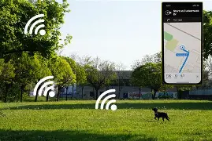

Monitoramento Inteligente em Tempo Real
O chip PetChip acompanha a saúde do seu pet 24h por dia, enviando dados diretamente para o aplicativo do tutor.

Batimentos Cardíacos
Detecta arritmias e esforço excessivo com alertas instantâneos.
Temperatura Corporal
Identifica febre ou hipotermia e avisa o tutor em tempo real.
Atividade e Sono
Monitora níveis de energia, descanso e padrões de comportamento.

Localização GPS
Rastreia o pet em tempo real, ideal para passeios ou emergências.
App do Tutor
Receba gráficos, alertas e histórico completo direto no celular.